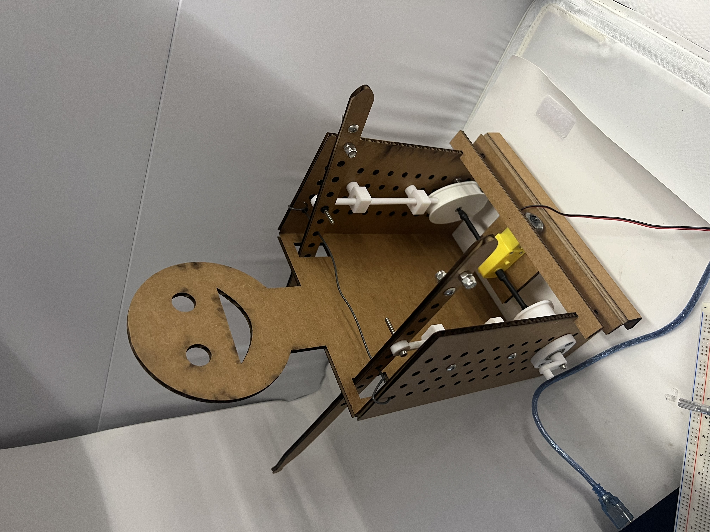

Create a kinetic sculpture. Include circuitry to move your sculpture. Control the sculpture with a circuit on a breadboard that uses components in the lab (eg. resistors, potentiometer). Use a multimeter to measure voltages in your circuit. Use Ohm's law to calculate current through the circuit. Document your work and learning. Use the photo booth in the lab to record a video of your sculpture and include at least one video/gif in your documentation.
My first idea for this was to create a sculpture of a drumming figure, but I didn't know
how to do this. I first drew a rectangle, neck, and circle for head in CAD, while trying
to figure out the exact mechanism I'd use to get the motor's motion into this up and down motion of a
drum stick. I used the kits in class to prototype this and found the components and cams
exercise to be really effective. After some discussion with Nathan, I realized I could turn the cams
sideways and have them sit behind the "body" of my sculpture. Then just have drumsticks poke through.
I also added eyes and a smile for some funny details. The CAD is below.
The cad wasn't that difficult. I measured the kits in class useing calipers to get the same
measurements for the hole thickenss and distnace from each other, but I deleted obviously
unnecessary ones to preserve more strength in the cardboard, though I'm not sure that was
actually needed. Unfortunately I forgot to take a picture of immediately after I laser cut, but
this was the result once one came was in.
The first problem I ran into was finding the right combination of height of the cam, as well
as which holes I need to connect the came to on the stick and where to anchor the stick.
Through basically trial and error I realized that the top hole was too high and the second
highest hole was too low, so I ran a wire through the top to anchor the sticks and hold them
where they need to be, creating the right motion.
This seemed to work, as well as with a screw and bolt in the last hole on the stick to help
weight it down when the cam falls. You'll also notive in the last two pictures there is a brace
that holds the two sides together. This worked, but I realized I needed something to hold the
motor. This was solved with the folloiwng "bracket". THough, I still used the one seen above
in the final version to help stabalize the motor.
I then used heat shrink directly between the motor and screws in the cams to connect the two.
I didn't know this when I attempted this, but apparently the heat shrink tubing gets much harder
and stiffer when shrunk, which worked nice for me. The following two images show the setup. You
might also notice, I added an extra bolt and screw to the back of the sticks. These just helped them
move more quickly with the motor. Also quick note, I did CAD and cut the sticks myself, but I seem
to not have saved that file unfortunately.

The motor was very quick and a little hard on the guy, so I wanted to slow it down using what we learned
in lab and in class. I used a potentiometer and arduino using the set up and code below.
int pot_pin=A0;
int motor_pin=5;
int pot_val;
int motor_val;
void setup() {
pinMode(pot_pin, INPUT);
pinMode(motor_pin, OUTPUT);
}
void loop() {
pot_val = analogRead(pot_pin);
motor_val = map(pot_val, 0, 1023, 0, 255);
analogWrite(motor_pin, motor_val);
}
The video of this code and the drummer boi working in action is hopefully below.